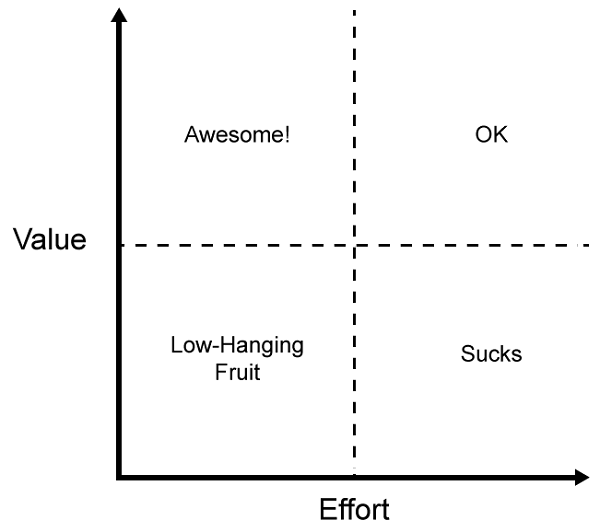

The Value-Effort Matrix: A framework for thinking about work
Your product owner comes to you with a request, and suddenly your stomach is tied in knots. There’s something about the request that doesn’t sit right. You blurt out, “well, that’s a lot of work,” because it’s the only thing that comes to mind. “Well, it’s really important,” comes the response. Inevitably, some uncomfortable conversation follows before one or both parties leave feeling wholly unsatisfied with what has transpired. Sound familiar?
The interaction between product owners and engineers is an always interesting and sometimes tense situation. This isn’t necessarily a bad thing – a little bit of pushing and pulling is good for the development process. Where things get difficult is a lack of shared understanding about what is being undertaken. I overhear and see situations where engineers are pouring an enormous amount of work into what is (in my mind) such a small thing that it should barely register on the priority list. In those instances, I imagine the initial conversation with a product owner and how it could have been more effective.
I eventually came to the conclusion that all work could be described by using two measures: value and effort.
Value
What exactly is value? Value means many things to many people, and it’s typically the job of the product owner to define the value for any given feature (or other work). Value means doing this work provides meaningful value to the customer, the product, or the company as a whole. In a healthy organization, the product owner has conducted market research, conferred with leadership, and determined that work should be done based on some perceived advantage of doing so. Value can mean:
- Competitive advantage. You’re building something that your customers want and need. Doing so means they won’t seek out other options (your competitors) to fulfill their needs.
- Sales. The work allows your company to sell to more customers or enter into bigger sales deals.
- Customer satisfaction. Scratching a particular itch that a customer has, whether through fixing bugs or adding new features, is the way to ensure that existing customers stay customers while also building a reputation.
- Strategic. Doing the work puts the company into an advantageous situation to execute on a larger strategy. For example, the company may want to enter a new market or new region.
There are other values that work can provide, but these tend to be the primary motivators. You shouldn’t be doing work if you don’t understand the value that the work provides.
Effort
Effort means a lot of things to a lot of people, but fundamentally it means the amount of work to complete a task. The amount of work is measured by:
- Number of people required. A two-person task is more effort than a one-person task, though not necessarily double. There tends to be additional effort in coordinating multi-person tasks so the amount of effort per person isn’t necessarily linear.
- Amount of time required. How long will it take to complete the work given the appropriate number of people? How long with less than the required people? And what if you take into account the inevitability of things not going as smoothly as planned? Understanding the time component of work is critical.
- Complexity/Risk. The difficulty of work isn’t simply measured in time. The more complex the work is, the more likely it will introduce or uncover bugs. The more complex a change is, the more risk you introduce into the system and the more careful you must be.
Similar to value, there are other things to take into account when calculating the effort for a task, but these tend to be the major ones.
The matrix
Over the years, I’ve come to think about work as falling on a two-dimensional matrix. Along one axis is the amount of value that work provides, increasing as it goes up. On the other axis is effort, which is the amount of time it takes to complete the work, increasing as it goes right. We all know that there are low effort and high effort tasks, and we all end up doing a fair amount of both (as well as work that falls in the middle).
The really interesting part is looking at where the value and effort for a particular piece of work overlap.

I split the graph into quadrants:
- Low-hanging fruit – this is low value work that requires little effort to complete. Anything that falls in this quadrant is usually described as, “we might as well just do it.” The amount of work is relatively equal to the value you get out of it, so it makes sense to do.
- Awesome – this is high value work that requires little effort to complete. This doesn’t come along very often but is extremely awesome when it does. When I was at Yahoo, were battling a performance issue with certain Ajax requests when we discovered that the Ajax responses weren’t being gzipped due to a misconfiguration. It took all of a few minutes to fix and made a huge difference in our performance.
- OK – this is high value work that takes a lot of effort to complete. Things like the redesigning an application or upgrading infrastructure fall into this category. The amount of effort required is high, but the value we get out of it is so high that we know we need to commit to it. Spending time in this area isn’t the most fun, but it is definitely worthwhile.
- Sucks – this is low value work that requires a lot of effort to complete. As the name implies, you don’t want to end up here. The amount of effort is way out of proportion to the value we get from that effort, which essentially means you’re wasting time (especially if there is other higher-value work that could be done in the same amount of time). This is like trying to get cross-iframe communication working in IE6 with different domains. Your goal should be to avoid working in this area at all costs.
The interesting part
That’s a nice theory, you may be thinking, but how does this work in reality? Here’s the interesting part: engineers and product owners each own one axis on this chart. Engineers know how much effort it takes to accomplish something while product owners know how much value the work provides. Want to determine where the work falls on the graph? Have each (engineer and product owner) assign a number 1 to 10 to their axis, then see where they intersect. You have a 75% chance of ending up in a quadrant where the work is acceptable and should be done.
Of course, this process works best when both parties are completely honest about the work.
Help, I’m stuck in “sucks”!
If you find that you’re stuck in the “sucks” quadrant, then there’s some work to do. There are two ways to address this. The first is to decrease the amount of effort to gain the same value (move into the low-hanging fruit quadrant), which may mean scaling back to the minimal implementation that provides the value. The second is to provide more value for the work you’ll be doing (move into the OK quadrant). Either approach is acceptable – what isn’t acceptable is remaining in the sucks quadrant and doing that work.
Of course, the last option is to agree to just not to do the work. Sometimes, this ends up being the right answer (you’re “off the grid” at that point).
Stop. Think.
So next time you’re doing planning, stop and think about which quadrant your work falls into. Most of the time, you’ll be working the low-hanging fruit or OK quadrants, which is what you want. If you find yourself in the awesome quadrant, give yourself a pat on the back and tell people of your heroic feats. If you find yourself in the sucks quadrant, back up, take an accounting, talk to your product owner, and see if you can move that work into a different quadrant. Don’t haphazardly spend time in the sucks quadrant – there’s a lot of high value work to be done, make sure you’re doing it whenever possible.